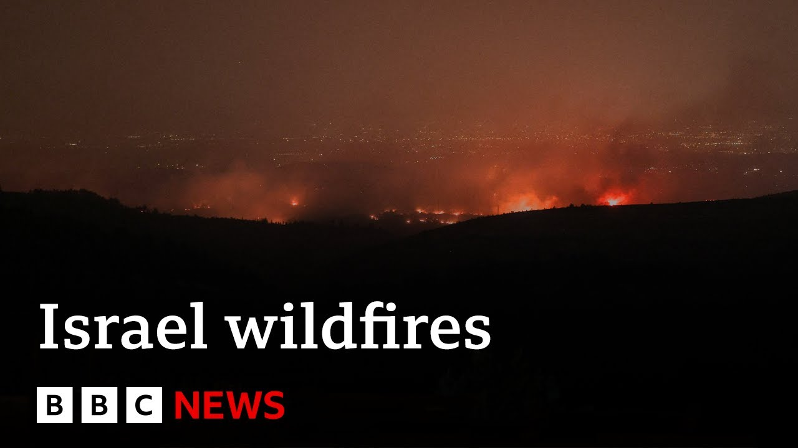

来B站一起耍【Global每日英语简报】
【以色列正抗击该国史上最严重的野火 | BBC新闻】
Summary: A national emergency has been declared in Israel due to wildfires fueled by strong winds and high temperatures near Jerusalem, with evacuations, injuries, and widespread damage reported. Experts link the increasing fire risk to climate change.
摘要： 以色列因强风和高温引发的耶路撒冷周边野火宣布进入国家紧急状态，人员疏散、伤亡和广泛损失被报道。专家将日益增加的火灾风险归因于气候变化。

⏱️ Estimated Reading Time: 3 min
A national emergency has been called in Israel as strong winds and high temperatures have fueled wildfires outside of Jerusalem.
以色列宣布进入国家紧急状态，强风和高温加剧了耶路撒冷郊外的野火。
Fire crews have been battling the fires there with several people reported who've been suffering from burns and smoke inhalation.
消防队员正在扑救大火，据报道有数人因烧伤和吸入浓烟受伤。
It's according to Israel's medical emergency services there.
这是根据以色列医疗急救服务的报告。
Let's speak to our Middle East correspondent, Yoland Nell.
让我们连线中东记者约兰德·内尔。
Now, Yoland, talk us through the situation there.
约兰德，请为我们介绍当地情况。
So, from what we understand, there are still about six areas in the hills outside of Jerusalem where you've got firefighters battling these flames.
据我们了解，耶路撒冷郊外的山区仍有约六处消防队员正在扑救的火点。
They're being helped uh by the Israeli army as well.
以色列军队也提供了支援。
There are several towns in that area that have been evacuated.
该地区多个城镇已疏散。
About 3,000 acres of land have been burnt.
约3000英亩土地被烧毁。
Now, when the Israeli Prime Minister Benjamin Netanyahu was talking about this, he said there had been a deadly combination of dryness and strong winds.
以色列总理本杰明·内塔尼亚胡表示，干旱和强风的致命组合导致了火灾。
You can see the wind is starting to pick up again now.
现在可以看到风力又开始增强。
Um in some cases, arson is suspected, also poor land management.
某些情况下怀疑是纵火，土地管理不善也是原因。
Um and inevitably the Israeli media is really picking over this today talking about um the state's level of preparedness for such wildfires because this is said to have been the biggest fire uh that the country has experienced.
以色列媒体不可避免地热议国家对此类野火的准备水平，据称这是该国遭遇的最大火灾。
Um and Israel has become more prone to wildfires of this kind in recent years with experts warning that climate change is just going to make it uh even more prone uh that their fire hazard is increasing.
近年来以色列更易发生此类野火，专家警告气候变化将加剧火灾风险。
Yoland, thank you for that.
约兰德，感谢报道。
Well, let's be now to BBC weather presenter Simon King who's standing by for us.
现在请BBC气象主持人西蒙·金为我们分析。
Simon, just talk us through what's been happening.
西蒙，请介绍当前情况。
Yeah, so Lewis, of course, the the wildfire itself may have been started by arsenal or other methods there, as Yulan said about the poor uh land management, but of course when a fire starts, you look to the weather conditions to how severe or how far they may spread.
正如约兰提到的土地管理不善，野火可能由纵火或其他原因引发，但火势蔓延程度取决于天气条件。
Now in Israel and Jerusalem, we've been seeing some strong winds recently.
近期以色列和耶路撒冷出现强风。
Gusts today are up to about 50 60 kilometers an hour and they of course just fan these flames and they're coming in from a westerly direction which means at the moment they are on the border of Israel and Jerusalem and there is concern that with that westerly wind it will push the flames a little bit further eastward into Jerusalem itself.
今日阵风达50-60公里/小时，西风助长火势并向东逼近耶路撒冷城区。
Now temperatures across Israel and Jerusalem haven't actually been that high around about average really of about 22 to 25° C.
以色列和耶路撒冷气温并不算高，约22-25摄氏度。
But of course, we're now going into the dry season in that region.
但该地区正进入旱季。
So, of course, the vegetation is very dry already.
植被已非常干燥。
Um, so when you've got these fires that starts, that's when they can spread really quite quickly.
一旦起火，火势会迅速蔓延。
Simon, thank you.
西蒙，谢谢。
[Music]
[音乐]